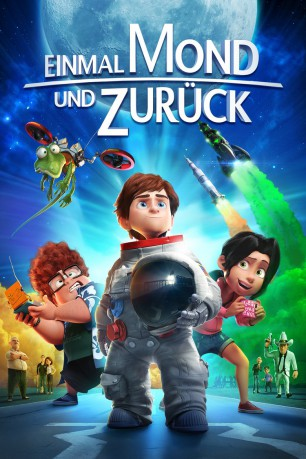

#4232 Einmal Mond und zurück
 
 IMDB-Wertung: 5.9 / 10
IMDB-Wertung: 5.9 / 10  Metascore: 0
Metascore: 0 
Mike Goldwing ist ein 12-jähriger Jungen, der gemeinsam mit seinen Freunden und der verrückten Hauseidechse Igor leidenschaftlich gerne surft. Und eigentlich wäre die Welt für ihn in Ordnung, gäbe es da nicht den schon lange währenden Zwist zwischen seinem Vater und seinem Großvater. Seit Jahren sprechen die beiden Astronauten nicht mehr miteinander, und so ist es Mikes sehnlichster Wunsch, die Familie endlich wieder zu versöhnen. Die Gelegenheit scheint zum Greifen nah, als die zwei für eine gemeinsame Mondmission ausgewählt werden … wäre da nicht der exzentrische Millionär Richard Carlson, der diese mit allen Mitteln zu vereiteln versucht.
Jahr: 2015
Dauer: 94 Minuten
FSK: 0
Land: Spanien Studio: Paramount PicturesTonspuren: DD5.1 - ,
Untertitel: Deutsch,
Auflösung: 1080p (1920x804) Größe: 4833 MB
Genre: Komödie, Abenteuer, Animation/Trick
Regisseur: Enrique Gato
Drehbuch: Oliver Kienle
Soundtrack:
Darsteller:
- Dani Rovira als Richard Carson
 Michelle Jenner als Amy González
Michelle Jenner als Amy González- Bryan Bounds als Jack Farr
- José Corbacho als Richard Carson
- Sam Fink als Richard Carson
 Rasmus Hardiker als Marty Farr
Rasmus Hardiker als Marty Farr Adam James als Scott Goldwing
Adam James als Scott Goldwing- Paul Kelleher als Frank Goldwing / Grandpa
 Derek Siow als Steve Gigs
Derek Siow als Steve Gigs- Carme Calvell als Mike Goldwing
- Javier Balas als Marty Farr
- Camilo García als Frank Goldwing
- Toni Mora als Scott Goldwing
- Marta Barbará als Samantha Goldwing
- Fernando García Cabrera als Steve Gigs
- Xavier Casan als Bill Gags
- Oriol Tarragó als Igor
- Ramon Canals als Jack Farr
- Jordi Royo als Jay Lemmon
- Margarita Cavero als Tess
- Alba Sola als Presidenta
- Juan Miguel Valdivieso als Patrullero 1
- Santi Lorenz als Patrullero 2
- Carlos Sianes als José / Analista
- Cesc Martínez als Ray / Fotógrafo
- José Carlos Garcia als Militar / Ace Gordete
- Xavier Martín als Gordo bar
- Joaquín Gómez als Anciano volador
- Santiago Cortés als Anciano gafas
- Paco Valls als Astronauta viejo
- José Antonio Jimenez als Analista 2
- Pedro J. Martos als Analista 3
- José Ignacio Latorre als Fotógrafo NASA
- Laura Monedero als Blondie
- Margarita Ponce als Mujer limpieza
- Phillipa Alexander als Amy González / Samantha Goldwing / Tess
- Félix Benito als Astro volador
- Gloria Cano als Infermera / noia
- Ferrán Carnicero als Analista 2
- Marta Cobos als Ray / Fotògraf
- Eduard Doncos als Militar / Ace Fornit
- Ed Gaughan als Jay Lemmon
- Andrew Hamblin als Bill Gags
- Ramón Hernández als Patruller 1
- Josep Maria Mas als José / Guardia
- Álex Meseguer als Astro vell / Analista
- Marcel Navarro als Marty Farr
- Lorraine Pilkington als Mike Goldwing
- Jordi Pineda als Gras Bar
- Pep Ribas als Steve Gigs
Datei: X:\Kinder Filme (A-F)\Einmal Mond und zurück (2015, FSK, 1920x804).mkv seit 26.08.2016
Festplatte: Kinder-Filme+Trick
 Es gibt insgesamt 68 Filme in der Gruppe 'Kinder Filme (A-F)'
Es gibt insgesamt 68 Filme in der Gruppe 'Kinder Filme (A-F)'